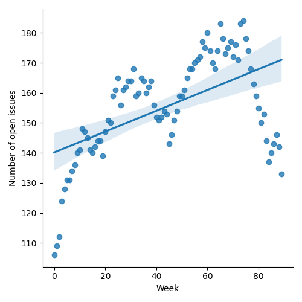
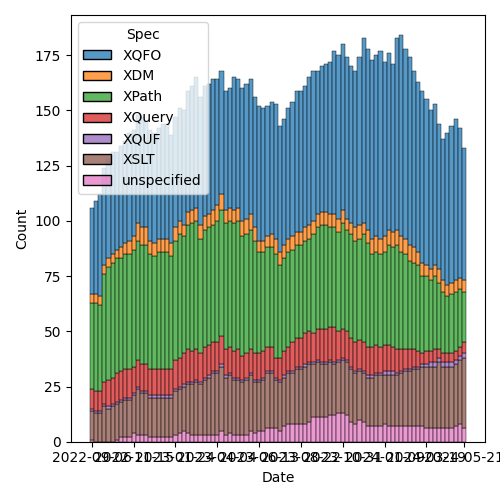
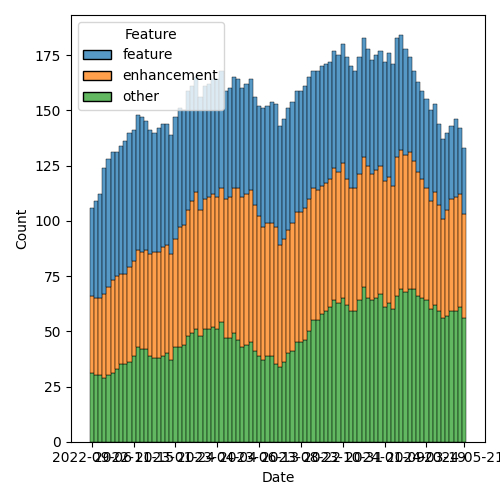

QT4 CG Meeting 079 Minutes 2024-05-28
Table of Contents
- Minutes
- Summary of new and continuing actions
[0/6] - 1. Administrivia
- 2. Technical Agenda
- 2.1. PR #1237: 1232 consistent rendition of rfc2119 terms
- 2.2. PR #1228: Adding the BLAKE3 hashing algorithm to fn:hash
- 2.3. PR #1062/#1027/#1227: fn:ranks
- 2.4. PR #1108: 566-partial Describe a less aggressive %-encoding for fn:build-uri
- 2.5. PR #1185: 1179 array:values, map:values → array:get, map:get
- 2.6. Issue #850: fn:parse-html: Finalization
- 3. Any other business
- 4. Adjourned
Meeting index / QT4CG.org / Dashboard / GH Issues / GH Pull Requests
Minutes
Approved at meeting 080 on 4 June 2024.
Summary of new and continuing actions [0/6]
[ ]QT4CG-063-06: MK to consider refactoring the declare item type syntax to something like declare record[ ]QT4CG-077-03: MK to add a note about document order across documents[ ]QT4CG-077-04: MK to review inconsistencies discovered in review of #1117[ ]QT4CG-078-01: MK to make the default for normalize-newlines backwards compatible.[ ]QT4CG-078-02: MK to update the prose oftransient{}to use the word “should”.[ ]QT4CG-079-01: WP to seek expert advice on hashing functions.
1. Administrivia
1.1. Roll call [9/12]
MK gives regrets. JLY gives regrets for this week and next.
[X]Reece Dunn (RD)[X]Sasha Firsov (SF)[X]Christian Grün (CG)[X]Joel Kalvesmaki (JK)[ ]Michael Kay (MK)[ ]Juri Leino (JLO)[ ]John Lumley (JLY)[X]Dimitre Novatchev (DN)[X]Wendell Piez (WP)[X]Ed Porter (EP)[X]C. M. Sperberg-McQueen (MSM)[X]Norm Tovey-Walsh (NW). Scribe. Chair.
1.2. Accept the agenda
Proposal: Accept the agenda.
Accepted.
1.2.1. Status so far…

Figure 1: “Burn down” chart on open issues

Figure 2: Open issues by specification

Figure 3: Open issues by type
1.3. Approve minutes of the previous meeting
Proposal: Accept the minutes of the previous meeting.
Accepted.
1.4. Next meeting
The next meeting is the face-to-face the face-to-face meeting on 4 and 5 June in Prague.
1.5. Review of open action items [3/8]
[ ]QT4CG-063-06: MK to consider refactoring the declare item type syntax to something like declare record[X]QT4CG-071-06: NW to clarify the cases that are distinguished by the leading empty string in path segments[X]QT4CG-072-03: NW to clarify the round-tripping of URIs[ ]QT4CG-077-03: MK to add a note about document order across documents[ ]QT4CG-077-04: MK to review inconsistencies discovered in review of #1117[ ]QT4CG-078-01: MK to make the default for normalize-newlines backwards compatible.[ ]QT4CG-078-02: MK to update the prose oftransient{}to use the word “should”.
1.6. Review of open pull requests and issues
1.6.1. Blocked
The following PRs are open but have merge conflicts or comments which suggest they aren’t ready for action.
- PR #1062: 150bis - revised proposal for fn:ranks
- PR #956: 850-partial Editorial improvements to parse-html()
- PR #921: 920 Allow xsl:break and xsl:next-iteration within branch of xsl:switch
- PR #871: Action qt4 cg 027 01 next match
- PR #832: 77 Add map:deep-update and array:deep-update
- PR #529: 528 fn:elements-to-maps
1.6.2. Merge without discussion
The following PRs are editorial, small, or otherwise appeared to be uncontroversial when the agenda was prepared. The chairs propose that these can be merged without discussion. If you think discussion is necessary, please say so.
- PR #1243: Change required result of system-property(…version)
(PR #1233 was withdrawn in email discussion after the agenda was published.)
Proposal: merge without discussion.
Approved.
1.6.3. Close without action
It has been proposed that the following issues be closed without action. If you think discussion is necessary, please say so.
- Issue #1000: XQFO Code in the Rules sections
- Issue #908: Function identity: documentation, nondeterminism
- Issue #894: Errors in forming function items
Proposal: close without further action.
Approved.
2. Technical Agenda
2.1. PR #1237: 1232 consistent rendition of rfc2119 terms
2.2. PR #1228: Adding the BLAKE3 hashing algorithm to fn:hash
See PR #1228
Straw poll: add BLAKE3? In favor: 4, opposed: 1.
- CG: The question is whether to do exactly this algorithm and not others?
- DN: My proposal should be regarded in a more general sense. There are faster algorithms, but many quality and security issues. This is just my opinion for a modern, better algorithm. Even if we merge this, let’s consider if we want to have at least one modern algorithm. It doesn’t have to be this one.
- RD: I wonder if it would be worth having a review of hasing algorithms implemented in different languages. XQuery and XSLT processors are implemented in many languages. Rather than making a specific decision on this now, say “these are the common algorithms that are readily available.” That lets us choose a suitable set or required and/or recommended algorithms.
- MSM: What I’m hearing is that we should think generally and not just about hashing algorithms but also the criteria by which we choose. I don’t have any suggestions. A systematic decision would be better than a casual one. I think that means someone needs to volunteer to do research.
- RD: I wonder if it might make sense to add additional functions: one that’s a default hash that returns the name of a sensible default hashing algorithm recommended by the implementor. And maybe an available-algorithms function.
- DN: I heard what RD said, but I think we’re deviating far away from the
original proposal. I think we just need one modern algorithm.
- … What MSM said is true, it would really be great if someone could do some research.
- WP: I agree with everything I’ve heard so far. Managing the list is a hard problem. I feel a little on the hook because I work with the sorts of people who could answer the question.
ACTION: QT4CG-079-01: WP to seek expert advice on hashing functions.
- CG: One question regarding the current proposal: this is BLAKE3 without the defaults. What about supporting keyed hashes?
- DN: If we get expert advice, hopefully that question will be answered.
- NW: I implemented all of the BLAKE3 options to amuse myself one evening; I
j think it wouldn’t be easy with the current function signature.
- JK: I like the idea RD has of a hashes-available function.
- RD: I just checked and Java has an API that supports testing what algorithms are available.
Proposal: leave this until we hear back from WP.
2.3. PR #1062/#1027/#1227: fn:ranks
- See PR #1227
- See PR #1062
- See PR #1027
- DN: I’m a little reluctant to talk in the absence of MK. I just wanted to say
that I don’t think the proposals are in that much conflict. With two
proposals, we should try to synthesize what’s best between them.
- … My proposal is a radical simplification, just a single key function. There was a long discussion and I proved it was possible.
- … I am not insisting on a key function, so we can use the approach that MK took.
- … What I think is missing in MK’s proposal is an additional argument that by default only creates distinct items in every rank.
- … This is a new function, so we could reorder the arguments so that the collation sequence is not so awkward to use.
- NW: Can you attempt to work with MK to come up with a unified proposal.
Leave until after XML Prague. DN will attempt to work with MK.
2.4. PR #1108: 566-partial Describe a less aggressive %-encoding for fn:build-uri
See PR #1108
NW attempts to describe the PR.
- RD: Do we want to specify that the path segment characters are encoded exclusively or do we want implementors to be allowed to encode additional ones.
- NW: I think it would be better if we had a single algorithm for all implementations.
- CG: Did you have time to look at the test cases?
- NW: I did, but I don’t have a PR yet.
Proposal: merge this PR.
Accepted.
NW describes his recent rewrite of fn:parse-uri for discussion in the future.
2.5. PR #1185: 1179 array:values, map:values → array:get, map:get
See PR #1185
CG: Introduced merge conflicts; looking at the issue instead.
- CG: We could drop the
array-valuesandmap-valuesfunctions and just usearray:getandmap:get.- … We could extend the functions to get more functionality by making the arguments optional.
Some discussion of how wildcard arguments and the function syntax intract.
- MSM: I guess it’s not quite orthogonality, but more user expectations, should
we consider: would it be better to allow the functional form to accept an
argument of
*just for parallelism? - CG: I think if the
*is a string, it’ll already give that value. - RD: I was going to suggest updating the XPath spec, but I see it’s been
updated to use the pairs accessor and things so we don’t need to update it to
say
map?*is equivalent tomap:get()although it may be worth adding that in a note in XPath.
Some discussion of the goal: it’s to get a flat sequence.
- DN: Do we have a good way to represent the unflattened members or values? We’re losing information and not considering the question of getting the data without loss. I think that the operator MK introduced is sufficient.
- CG: I’m not sure how that’s related to this issue. How would you use the new syntax here?
Some question if there was confusion about the question.
- RD: With the new lookup modifier, the items modifier returns the flat list.
Pairs returns the pairs and values returns a structured sequence of arrays to
preserve the grouping. You can use those.
- … If you want specific values, you can specify those in a parenthesized sequence to the lookup operator.
- CG: Yes.
- DN: Maybe we need more examples?
- RD: There are examples in the postfix lookup section.
- DN: But I mean for these functions. We need to do a better job of grouping things together. We should have a single section on records, for example.
- CG: I think the best way is to create a separate issue on that.
- … My hope was to make it easier with these two functions.
- NW: I think reducing the number of functions is good.
CG agrees to finalize the PR after the meeting.
2.6. Issue #850: fn:parse-html: Finalization
See issue #850
- RD: MK has opened a PR that needs sorting. I was planning on removing most of the
supported HTML variants and just saying use HTML 5.
- … We can just say HTML 5 or later.
- … I’ll work on simplifying the API arguments.
RD to perhaps work with MK on the open PR.
3. Any other business
None heard.